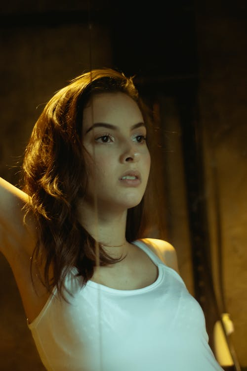
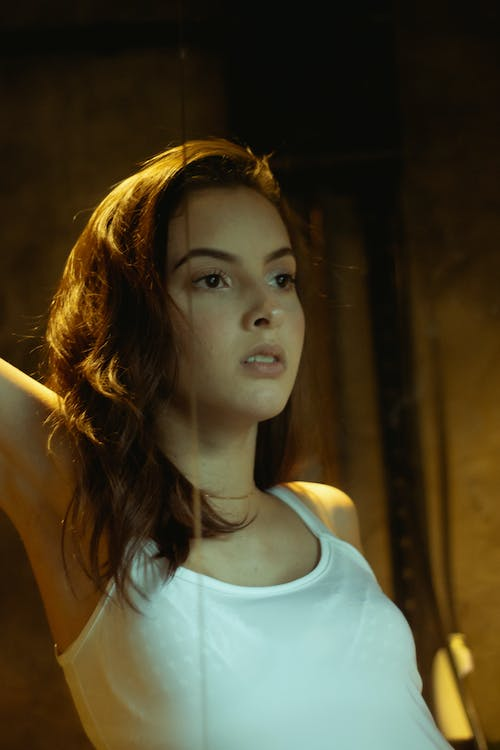
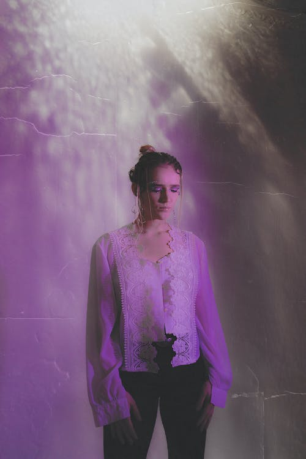
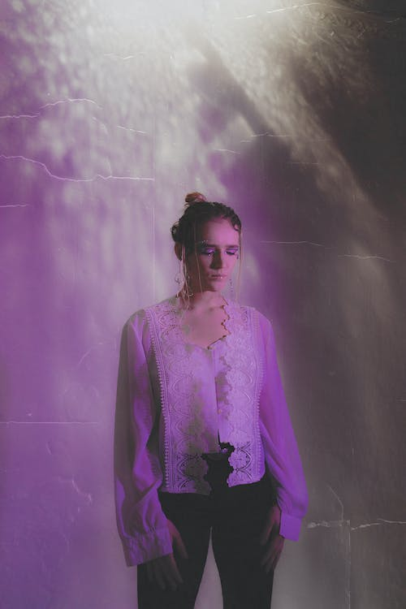

between
Reality
&
Dream
shots that will change your mind

shots that will change your mind
Photography has become a part of almost every element of our lives.
It become widespread and diverse but we know that this is still a real from art and magic.
explore works


This series is excellently showing that ordinary portrait photography can still be inspiring you.
Check the shots of beautiful Caroline in red and green lights.
 



Beautiful dance of Henna in neon lights with retro effect.Pink lights, pretty women and sensuality.
Inspiring vibes and invisible beautiful soul on this short.
 



Retro nostalgia can be sweet and sour at the same time.Christina helped us to make photos,that will give you this feelings.
Drop in past times with these collection of 80's styled photos